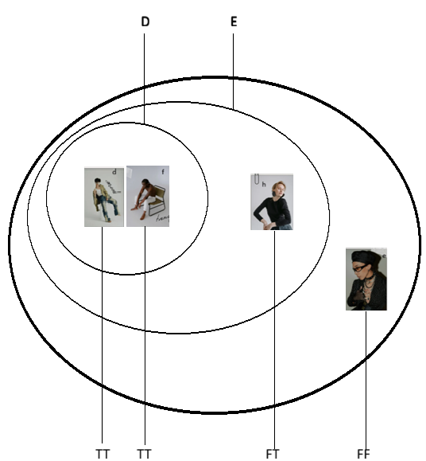

Abstract
This paper explores how humans construct, interpret, and communicate meaning, bridging the domains of semantics, logic, and quantification.
Throughout the paper, the emphasis is on the dynamic nature of meaning, highlighting how it evolves in relation to context, culture, and time. By integrating linguistic theory, logical structures, and philosophical reflection, the work offers a unified framework for understanding human communication.
Aasron the Alien, apparently, you have the understanding of language to communicate. Communication is the process of transmitting information from one person to another (Keyton, 2007). Humans construct meaning through words, sentences, and context, yet understanding how this happens requires careful attention to the rules, patterns, and reasoning embedded in language. This paper explores three interconnected domains: semantics (how words and sentences carry meaning), logic (how humans reason about possibilities and consequences), and quantifiers (how humans generalise or specify). Each section builds upon the previous one, revealing how humans create, interpret, and negotiate meaning in a complex, dynamic world.
Communication is the process of transmitting information from one being to another (Keyton, 2007). Information itself is a pattern of data organised in a particular way. A sentence, for instance, consists of symbols that form words in a specific language, each carrying particular meanings.
Even the way words sound can alter a message. The phonotactics of a language refer to the permitted arrangements of sounds (i.e., phonemes) in that language (Yule, 2010). The way humans construct, understand, and share meaning is known as semantics (Löbner, 2012). Semantics deals with the meaning and interpretation of words, signs, and sentence structures. It influences our reading comprehension, how we interpret the utterances of others, and even the decisions we make as a result of those interpretations.
One essential distinction in semantics is between conceptual meaning and associative meaning. Conceptual meaning is the literal, dictionary definition of a word or sentence. Associative meaning refers to the personal and cultural associations that accompany a word throughout a person’s life. For example, the word needle literally describes a thin, sharp metal object. Yet it can also evoke associations with pain, illness, drugs, knitting, or the proverbial "needle in a haystack" (Yule, 2010, p. 113).
These connections form what is known as lexical meaning, the network of related words and concepts that the human mind draws upon to comprehend language (Kearns, 2011). Humans organise these relationships in categories, such as:
However, meaning also depends on the structure of a sentence. Structural meaning is derived from syntax (i.e., the arrangement of words). All English sentences follow certain grammatical patterns, or rules, that dictate how words combine to form meaning.
For instance, a simple sentence can be analysed as follows:
The dog ate the worm → Noun Phrase (NP) + Verb + Noun Phrase (VP)
Nouns describe objects, creatures, places, or abstract ideas (such as love) as if they were all "things." A noun becomes a noun phrase when accompanied by an article (a or the) to classify or identify that thing. Therefore, the dog and the worm are NPs.
Verbs describe actions (eat, sleep, bark, fight). The second NP in the sentence is the direct object upon which the action is performed. Thus, the Verb + NP form a Verb Phrase (VP). By mastering this simple rule, along with a few nouns and verbs, you can already create numerous English sentences.
Still, communication can easily be disrupted when ambiguity interferes with interpretation. Words or symbols may have multiple meanings, creating confusion. For example, homophones are words that sound the same but differ in meaning (e.g., right/write), and homonyms are words that are spelled the same but have different meanings (e.g., bat as a flying mammal or a sports tool).
Differences in interpretation can be subtle or drastic, depending on culture, language, age, education, and experience. The human ability to recognise what is meant without it being explicitly stated is called pragmatics (Kearns, 2011). Through pragmatics, humans infer meaning from context, tone, and even gestures, which can themselves shift meaning entirely.
Aasron, now that you understand how humans build and exchange meaning through language, I hope you recover and have the opportunity to explore this knowledge on Earth. Should you return to your planet and explain these concepts to your peers, remember: what I have taught you may have already evolved by then, because meaning itself changes over time.
Now that you understand how humans construct meaning from words and sentences, we can explore how they reason about possibilities, relationships, and consequences, starting with the conditional "if."
In English, the word if expresses that something may or may not happen, depending on certain conditions. This is why its technical name is the conditional. This section explores the linguistic and logical dimensions of if, comparing its descriptive meaning in natural language with its formal representation in logic, and how these two can diverge.
When someone speaks truthfully, that determines the truth-value of a sentence. Negation can reverse this value: if the original proposition is true, its negation is false, and vice versa. A proposition is the part of a sentence or utterance that holds a truth value, true (T) or false (F), and that can be connected to other propositions (Turner, 2011).
Logic, the science of reasoning, examines what makes an argument valid (Gamut, 1991). Logic can be divided into informal logic (the study of arguments in natural language) and formal logic (the analysis of validity through symbols and structure)
Propositions are often symbolised by letters, commonly P and Q. Logical connectives link propositions together. There are five key connectives in propositional logic, each with its own truth table (see Appendix 1). The most common symbol used for the conditional is "→" and is often read as:
if → then ≡ P implies Q ≡ if P, then Q ≡ P only if Q ≡ P → Q.
In essence, if one event occurs, then another may follow.
For example: If I stand in the rain, then I will get wet.
Here, P is the antecedent (the sufficient condition for Q), and Q is the consequent (the necessary condition for P).
Material conditionals (P → Q) evaluate truth based solely on the truth-values of propositions. For example:
P= Today is Christmas day. Q= The stores are closed.
| P | Q | P → Q | In words |
|---|---|---|---|
| T | T | T | If it is Christmas day, then the stores are closed ≡ P → Q ≡ in the real world, the expectation is met. |
| T | F | F | If it is Christmas day, then the stores are not closed ≡ P → ¬ Q ≡ in the real world, the expectation is not met, because we know nobody works on Christmas Day |
| F | T | T | If it is not Christmas day, then the stores are closed ≡ ¬ P → Q ≡ There might be another reason why the stores are closed. |
| F | F | T | If it is not Christmas day, then the stores are not closed ≡ ¬ P → ¬ Q ≡ in the real world, the expectation is met. |
Figure 1. Truth table for the material conditional.
The material conditional in logic considers only the truth-values of its parts, without regard for real-world reasoning. It is purely mathematical. The conditional is false only when the antecedent is true and the consequent is false.
However, this abstraction cannot capture the full depth of human communication. It cannot represent sarcasm, cultural nuance, or world knowledge. Humans share background assumptions and interpret meaning semantically and pragmatically, not just logically.
For instance, in many Western societies it is common knowledge that shops are closed on Christmas Day. In regions where Christmas is not celebrated, this same truth table would lose meaning - the assumption of closure would not exist.
Additionally, material conditionals sometimes yield counterintuitive results. Consider:
If ice can melt, then water boils at 100 degrees.
Both propositions are individually true, but unrelated. Logic deems the whole statement true, even though in human reasoning the two ideas are clearly unconnected. This is one of the reasons why many linguists and philosophers find the material conditional controversial (Garrett, 2012).
Unlike the material conditional, indicative conditionals reflect real relationships between propositions, often causal or inferential.
If I study hard enough, then I will pass my exams.
Here, the connection between studying and passing exists in the real world. However, this connective “→” is not suitable for counterfactuals, statements about situations known to be false or unlikely:
If Albert Einstein had not won the Nobel Prize for Physics in 1921, someone else would have.
This cannot be proven; it merely invites speculation. Contrast this with an indicative version:
If Albert Einstein didn't win the Nobel Prize for Physics in 1921, then someone else did.
The second sentence is necessarily true; someone did win that year, while the first remains hypothetical.
As noted in the previous section, language serves to exchange information about our world. In linguistics, this relationship between natural language and truth conditions connects meaning to the concept of truth (Strawson, 1971). Frege (1918) distinguished between sense and reference: the sense of a sentence is its truth-condition, while its reference is its truth-value.
Grice (1989) analysed if in natural language as semantically related to the logical connective “⊃” (the horseshoe), representing material implication. The key difference between “→” and “⊃” lies in relevance: the arrow “→” suggests that P and Q are meaningfully connected, whereas the horseshoe merely indicates a truth-functional relationship.
Grice further differentiated natural and non-natural meaning:
In natural language, if links two clauses, the antecedent and the consequent, establishing truth-functional relations between them (Grice, 1981). For instance:
If his father dies, Maks will inherit everything.
Here, P = "his father's death" and Q = "Maks inherits everything."
The conditional is false only if P is true (the father dies) but Q is false (Maks does not inherit).
This structure can be expressed through two logical rules:
| Modus Ponens | Modus Tollens |
|---|---|
| P → Q (If his father dies, Maks will inherit) | P → Q |
| P (His father dies) | ¬Q (Maks does not inherit) |
| Therefore, Q (Maks inherits) | Therefore, ¬P (His father does not die) |
Modus Ponens states: if P → Q and P is true, then Q must also be true.
Modus Tollens states: if P → Q and Q is false, then P must also be false.
In human reasoning, however, these formulas carry causal and temporal meaning. "If his father dies, Maks will inherit everything" implies cause and effect, not just truth-value. The inverse is also possible: "If Maks inherited everything, then his father must have died."
In non-declarative sentences, if can take new forms, as in:
If his father dies, will Maks inherit everything?
Here, the conditional loses truth-value and becomes a question, rendering the arrow logically irrelevant.
Horn (1989) added another dimension, arguing that if can be used both descriptively and metalinguistically.
For example:
If you're hungry, there's some curry left on the stove.
Here, if does not establish a strict causal or truth-functional relationship. Whether or not you are hungry, the curry still exists. The if functions as a polite cue, softening the offer.
To summarize, the material conditional concerns only the truth-values of its parts, represented by the single-headed arrow. The indicative conditional reflects the real relationship between antecedent and consequent, while counterfactuals express hypothetical or speculative conditions unrelated to the arrow. Linguistically, the conditional can function both descriptively and metalinguistically: descriptively, if mirrors logical implication; metalinguistically, it reflects humans' conscious ability to analyse language itself.
Aasron, with this understanding, you should now be able to present your findings to your professors and begin your own lecture series. Good luck, and may logic be gentle with you.
While “if” structures show how humans relate events and consequences, quantifiers reveal how they handle numbers, generalities, and the scope of statements in language.
In order to answer the question posed it is of importance to understand how logic came to life, how restricted propositional logic is compared predicate logic, and to show the strengths and weaknesses of the quantifiers used in predicate logic and natural language.
Aristotle assumed that logic could be used to deduce truth from true premises, thinking that humans were born with an innate true knowledge which could be used as logical premises for logic. He called it the system of thought, his failure was not to accept that humans do not have absolute true premises, except the ones that are scientifically proven to be true (Burris, 1997). Everyone uses logic without the implicit knowledge of its existents, without using formulas literally, but we most certainly do use similar structures to communicate with one another. However, logic alone cannot exemplify the real world, because humans can have different truths when it comes to opinions or expressing emotions. In semantics, logic is used to capture the pre-theoretic notion of presupposition and entailment within natural languages, whereas in computer science, they focus more on facts and the mathematical part of the matter.
Propositional logic is a structure for reasoning with sentence combinations, which forms the basic structure of an argument. The truth-table perspective is powerful in its own way, but remains basic with restrictions compared to natural language. Basic propositions in propositional logic are not assumed to have internal structure (Burris, 1997). The actual natural language form shows how sentences that make quantified statements about properties of objects, by classifying the world in terms of hierarchical system of predicates. The majority of the Germanic languages place predicates in the middle, Dutch is interesting, since they put predicates in the middle of their main clauses (e.g. Els zag Klaas), and move the predicate to the end in subordinate clauses (e.g. Ik hoorde dat Klaas Els had gezien). Semantics in any language connects the syntactic expressions of that language to real situations that language users talk about, when communicating information to each other. Semantic interpretation is a process that acquires meaning by connecting it with structures.
Predicate logic is a rationalised version of a language of thought that was introduced by the German philosopher and mathematician Gottlob Frege, and the American philosopher, logician, mathematician, and scientist Charles Sanders Peirce. Frege and Pierce took the idea of the basic propositional logic and added the elements that were absent, to enrich the formula structure closer to natural language, and creating the ability to general reasoning in science and daily life. This adds predicates and quantifiers to understand objects, their properties, the relations between them, and their arbitrary forms of quantification. It also incorporates the same operations used in propositional logic. This is considered to be the most important system in logic, because to a certain extent, it is the act of counting and measuring that captures human sense observations and experiences into a set of “numbers” (Burris, 1997). Predicate logic gives both verbs and nouns properties of objects, even though their syntax and communicative function are different in natural language. Sometimes quantifiers are used in the place of a determiners or adjectives (e.g. by using 'some' or 'any'). Determiners are words that are used at the beginning of the noun phrase to give information whether the noun phrase is specific (e.g. the/this/that house) or general (e.g. a/these/those house(s)), however, there are no examples that predicate logic can specify determiners. In natural language, quantifiers are used when giving information about the number of something: how much or how many, giving quantified statements about properties of objects:
Numerals quantify the exact number of something that is needed compared to all the other quantifiers. When person A has 5 chickens, person B has a few chickens, person C has a lot of chickens, how is it possible clarify how many chickens person B and C have? Associations of amounts are different for everyone.
Deductive reasoning is to arrive at a conclusion based on the propositions that are assumed to be true and refer only to properties of single objects, not relations between two or more objects. This brings it closer to the natural languages in the common sense world of daily activities, and the symbolic languages of mathematics (Burris, 1997). Predicate logic is a combination of the two areas; however, it remains different from natural language and follows a more mathematical system.
There are two symbols in predicate logic that is supposed to represent all quantifiers in natural language, the universal quantifier (∀x) which carries the meaning: for all objects (x) in the domain of discourse each arbitrary called 'x' has a certain property. The existential quantifier (∃x): there exists an x in the domain of discourse arbitrarily called x such that x a certain property.
The variables for these objects can express a number of things. Therefore, it has a way of expressing quantification. Quantifiers which say that objects exist without naming them explicitly.
The universe of discourse is the set of all things humans wish to talk about; the set of all objects that can be sensibly assigned to a variable in a propositional function. Frege (1879) devised an original procedure for regulating binary quantifiers such as every and some, and unary quantifiers everything and something. Observation of natural language and logic take the following examples, they show similarities between natural language and logic, however, there remains a bit of friction. It may seem that 'Adam is a man' contains an existential quantifier that claims, there is a man, but this form is deceptive. As an example from Latin, puer est (he is a child) and puer natus est (a child is born). Such languages do not use the indefinite article in positions where there is a real existential quantifier. Besides, languages that do not involve varieties of quantification: Pirahã, or Múra-Pirahã, is the language of the Pirahã people of the Amazonas. Everett (2005) thought that Pirahã has the words hói (one) and 'hoí' (two), distinguished only by tone. After his analysis, Everett claims that Pirahã has no words for numerals at all, and that hói and hoí actually mean 'small quantity' and 'large quantity'. This is specifying relative quantities. Perhaps, the societal norms for these groups of people are to share based on group or family size. Therefore, having 'enough' food is all relative. Whether they have x or y amount is immaterial as long as they have enough. It does not matter to them whether they have five small fish or one big fish, as long as the result is the same. This is in direct contrast to a Western capitalist mind-set where having five of something, regardless of individual item size, is innately and naturally assumed to be better than having one. Interestingly, this applies even if one has no concept of the actual item. If someone suggested that person A has five Stiopiels and person B only has one, person C probably would assume, as a Westerner, that person A, was somehow more fortunate even without any knowledge of what a Stiopiel was. However, in Pirahã, the existential and universal quantifiers can work perfectly as they do not need to specify the information that is sent out.
In order to recognise proper nouns in predicate logic is by using the letters of the alphabet (a,b,c..), and capital letters for the predicate verbs. For example, Adam talks: Ta. The form of Adam is a man uses: Ma. These examples demonstrate the variety of usage of predicates in natural language compared to propositional logic. Variables only use the constants x, y, z, when the object is indefinite. When more than one variable is quantified, the closest to the formula applies first. In natural language, one place predicates are intransitive verbs and common nouns (unary predicates). Two place predicates are transitive verbs (binary predicates). Three place predicates are ditransitive verbs (ternary predicates).
| Subject | Predicate | |
|---|---|---|
| English (natural language) | All As | Are Bs |
| Semantics (logic) | ∀x(Ax | →Bx) |
In natural language, ternary predicates are enough to express the most complex verb pattern there is, however, logical languages can handle any number of arguments. Goldfarb (2003) argues that a proposition with a variable x is neither true nor false, since x can be true or false depending on its value. A predicate with variables can develop in a proposition by applying one of the following to each of its variables:
One formula in predicate logic can talk about many situations, and even about one condition under different interpretations. Predicate logic simply describes universes of discourse consisting of objects (Goldfarb, 2003). For example:
The square represents the Domain of Discourse (DD).
The advantages of the formal notation of predicate logic quickly become transparent when the quantifiers are put together. This creates patterns that are essentially more sophisticated than those of propositional logic. Combined patterns occur in science and natural language, however predicate logic makes them formal:
In these examples both the existential and universal quantifiers can be used, when more than one variable quantified, the closest to the formula applies first. Example 6, is logically stronger than example 5. Although, 6 claims that there is a unique person e.g. called Beyoncé, who is admired by everyone. On the other hand, it also requires that for every person in the DD, we can find some person 'x' whom x loves (see figure 2). This could be a different person x in each case. To distinguish between examples that can have multiple meanings, we use the scope of the quantifiers. In 5, ∀ has wider scope than ∃, while in the sentence 2, the scope ordering is the opposite. There are two ways of representing the meaning of 1, and they are both fairly valid. In other words, it can be argued that 1 is ambiguous with respect to the scope of the quantifier, and the formulas 5 and 6 make the ambiguity obvious by modelling the facts of quantification.
However, the scopes of quantifiers are limited to the antecedent and the consequent, respectively, so the variable x can be recycled. Open sentences are expressions similar to propositions, it only makes a distinction between the subject and predicate. They are true or false for particular values of their variables. Just as one had to distinguish between ¬(P&Q) and ¬ P&¬Q in propositional logic, the representations of scope can be simplified by the following example (adapted from Goldfarb, 2003):
Someone is a philosopher and is wise.
This example provides that existences of x that is in the scopes of different quantifiers act as different variables. Existences of x inside the scope of a quantifier are in fact capsulated by that quantifier from the parts of the sentence outside that scope. By using brackets, the extent of the application of a quantifier and its value is bound by that effect. Again, modelling the facts of what needs to be quantified.
An example of negation:
All that sparkles is not metal
S = x sparkles
M = x is metal
This sentence is ambiguous in natural language, it can either mean that not everything that sparkles is metal, or that none of the things that sparkles are metal. These two interpretations correspond to the logical representations in both sentences. The scope is the open sentence enclosed in parentheses of that quantifier. Just as the scope of negation has limitations of the sentence being negated. The scope of an existential or universal quantifier tells us what open sentence is quantified. Separation of scope is essential for both negations and existential quantifiers, which vary in the relative scope of the universal quantifier and negation. The interpretation in the first sentence, in which negation has a wide scope, its scope includes the universal quantifier, less directly mirrors the syntactic structure than the interpretation in the second sentence, in which it has narrow scope with respect to the quantifier. In addition, this means that somewhere between the mappings from syntax to semantics, some operations must come into shifting the relative ordering of constituents (Jeffrey, 1991). Negations and scope simplifies ambiguity, and models the facts of quantification that occurs in natural language.
The collaboration between quantification and negation in predicate logic:
These examples show that natural language connectives do not correspond to those of the logical language. Actually, monadic predicate logic also has basic inferences that are not syllogistic in nature:
Implication and conjunction use in the domain of discourse:
| Subject | Predicate | Ex= one person speaks E |
|---|---|---|
| All Dutch People | speak English | Dx= All D speak E |

For all objects in the domain of discourse each arbitrary called x, if each x is a D, then each x is an E. And anything or anyone outside of those factors is not capable of doing either (see figure 3). The formulas, ∀x(Dx → Ex) and (∃x) (Dx&Ex) can be used, however, the formulas are not equivalent. They are simply both true for this domain of discourse. If everything is D, then, logically, something is D. In other words, the argument: 'Everyone is D', therefore, 'Someone is D', is also valid. Note that, this example provides why it is important to use implication for universal quantification and conjunction for existential quantification. ∀x(Dx & Ex) would imply that all people are Dutch and speak English, which is false. But when it comes to the existential quantifier (∃x) (Dx&Ex) there are some people that are Dutch and that speak English, whereas (∃x) (Dx→Ex) means there exists some people that, if they are Dutch then they speaks English. It would allow the situation with an empty antecedent to be true and the existential quantifier expresses that the antecedent does have one or more referents. Which causes the quantifiers to modal the facts of quantification.
Syllogisms are logical arguments where a quantified conclusion is inferred from two other quantified premises (Goldfarb, 2003). Syllogistic theory has the following equivalences:
Technically, the restriction to domains of discourse is sometimes reflected in how it limits a quantifier to some relevant subset, indicated by a unary predicate.
To exemplify, in clear translations of syllogistic sentences (adapted from lecture notes):
| Natural Language | Predicate Logic |
|---|---|
| All As are Bs | ∀x(Ax → Bx) |
| No As are Bs | ¬∃x(Ax & Bx) |
| Some As are Bs | ∃x (Ax & Bx) |
| Not all As are Bs | ¬∀x(Ax → Bx) |
| The syllogism with premises, | corresponds to the valid predicate-logical inference |
|---|---|
| All A are B | ∀x(Ax →Bx) |
| All B are C | ∀x(Ax →Bx) |
| Therefore All A are C | Implies: ∀x(Cx →Ax) |
One of the limitations in predicate logic is that there is no grammatical distinction between singular and plural, even in pronouns (Some As are Bs and Some A is B, have the same formula). However, natural language does quantify this fact. In addition, natural language uses pronouns to identify people, whereas, logic only uses someone or everyone, and people stay unidentified (in my opinion unquantified).
The logical forms that express ‘Everyone loves someone’ is equivalent to ‘Every number has a larger number’. To illustrate, three quantifiers are involved in the famous saying (adapted from Burris, 1997):
"You can fool some people some of the time, and you can fool some people all of the time, but you cannot fool all people all of the time".
(∃x)(P x & ∃y(P y & ∃z(T z & F xyz)))
P=person T= time F=fooling
In this scenario, you should be read as someone.
Someone cannot fool all people all of the time:
¬∃x(P x & ∀y(P y → ∀z(T z → F xyz))).
This example shows the way the quantifiers identify the quantification in full accuracy between the sentence structures, and where a conditional can be expressed as a conjunction (or a disjunction). In addition, formal logic allows to transform propositions using one connective into different, but equivalent propositions using another. However, natural language does not seem to correspond to it the same way.
The last example in the restrictions of predicate logic versus natural language, is how to express in formal language when someone is talking 'about something'. There is a difference between meaning and truth (adapted from lecture notes):
Sentence 1 is 'about polluted cities', whereas sentence 2 is 'about cities'. However, the formula structure remains the same while the meanings of the sentences separate. In this example the formula is ambiguous and only natural language seem to modal the facts of quantification more accurately.
On the one hand, natural languages use quantifiers the same way as the universal and existential quantifiers when quantifying without numerals, they remain unspecified. On the other hand, predicate logic has only two symbols to quantify all the different types of unspecified quantifiers in natural languages, which shows one of its limitations.
However, predicate logic seems to model the facts of quantification by using negations and scope, which simplifies ambiguity that occurs in natural language. It also gives language an amazing flexibility in accuracy compared to propositional logic. Nonetheless, in the majority of natural languages, there are still restrictions in the use of predicate logic when it comes to identifying and specifying things, people, singular, plural, etc.
Where Frege, Peirce, and other scientists have complemented and renovated propositional logic into predicate logic, yet, it seems that the universal and existential quantifiers model the facts of quantification in natural languages to a certain level. It seems that debates about how natural language structure relates to formal language are far from over, however, there remains an open door for different types of research for the all the generations to come.
Burris, S. N. (1997) Logic for mathematics and computer science, Missouri: Prentice Hall.
Cann, R. and Anderson, S. R. (1993) Formal semantics: An introduction, United Kingdom: Cambridge University Press.
Carston, R. (2008) Thoughts and utterances: The pragmatics of explicit communication, Oxford: Wiley-Blackwell.
Cummings, L. (ed.) (2011) The Routledge Pragmatics encyclopedia, United Kingdom: Routledge.
Everett, D. (2005) 'Cultural constraints on grammar and cognition in Pirahã: Another look at the design features of human language', Current Anthropology, 46 (4): 621–646.
Frege, G. (1879) Begriffsschrift: Eine der arithmetischen nachgebildete Formelsprache des reinen Denkens, Halle: Louis Nebert.
Frege, G. (1918) 'Der Gedanke: Eine logische Untersuchung', Beiträge zur Philosophie des deutschen Idealismus, 1 (2): 58–77.
Gamut, L. T. (1991) Logic, language, and meaning, volume 1: Introduction to logic, Chicago: University of Chicago Press.
Garrett, B. (2012) Elementary logic, United Kingdom: Acumen Publishing.
Goldfarb, W. (2003) Deductive logic, Cambridge: Hackett Publishing Co.
Gregory, H. (2015) Language and Logics: An introduction to the logical foundations of language, Edinburgh: Edinburgh University Press.
Grice, H. P. (1981) 'Presupposition and conversational implicature', in Cole, P. (ed.), Radical Pragmatics, New York: Academic Press.
Grice, H. P. (1989) Studies in the way of words, Cambridge, MA: Harvard University Press.
Haight, M. (1999) The snake and the fox: An introduction to logic, London: Routledge.
Harley, T.A. (2013) The psychology of language: From data to theory (4th edition). Hove: Psychology Press.
Horn, L. (1989) A Natural History of Negation. Cambridge: Cambridge University Press.
Jeffrey, R. (1991) Formal logic: Its scope and limits: Instructor’s manual (4th edition), Cambridge: McGraw-Hill Inc.
Kearns, K. (2011) Semantics (2nd edition). New York: Palgrave Macmillan.
Keyton, J., Shockley-Zalabak, P., Keyton, P.J. and Shockley-Zalabak, P. (2007) Case studies for organizational communication: Understanding communication processes (2nd edition). Los Angeles, CA: Roxbury Publishing Company.
LePore, E. (2003) Meaning and argument: An introduction to logic through language, United Kingdom: Blackwell Publishers.
LePore, E. (2012) Meaning and argument: An introduction to logic through language, Malden: Wiley, John & Sons.
Löbner, S. (2012) Understanding semantics (2nd edition). New York, NY: Hodder Education.
Lucy, J. A. (1993) Reflexive language: Reported speech and Metapragmatics, Cambridge: Cambridge University Press.
Read, S. (1995) Thinking about logic: An introduction to the philosophy of logic, New York: Oxford University Press.
Restall, G. (2004) Logic: An introduction, United States: McGill-Queen’s University Press.
Saeed, J.I. (2008) Semantics (3rd edition). Malden, MA: Wiley-Blackwell.
Sainsbury, R. M. (1991) Logical forms: An introduction to philosophical logic, Cambridge: Blackwell Publishers.
Sanford, D. H. (2002) If P, then Q: Conditionals and the foundations of reasoning (2nd edition), United Kingdom: Taylor & Francis.
Strawson, P. F. (1971) Logico-linguistic papers, London: Methuen.
Turner, K. (ed.) (2011) Making semantics pragmatic, Netherlands: Emerald Group Publishing.
Woods, M. and Wiggins, D. (2003) Conditionals, United Kingdom: Oxford University Press.
Yule, G. (2010) The study of language (4th edition). Cambridge, UK: Cambridge University Press.